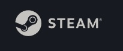

스팀(영어: Steam)은 밸브 코퍼레이션에서 개발한 디지털 관리 멀티플레이어 플랫폼이다. 처음의 스팀 서비스는 2003년 9월 12일 시작되어 현재에도 서비스 되고 있으며, 일인칭 슈팅 게임부터 롤플레잉 게임, 레이싱 게임 그리고 독립 게임까지 다양한 게임을 디지털로 관리하며 배급한다. 테이크투 인터랙티브, 록스타 게임스, 에이도스 인터랙티브, 인트로버전 소프트웨어, 스트레티지 퍼스트, 팝캡 게임즈, 캡콤, 이드 소프트웨어, THQ, 일렉트로닉 아츠, 유비소프트, 2K 게임즈, 워너 브라더스, 액티비전 등이 스팀에서 게임을 판매하고 있다.